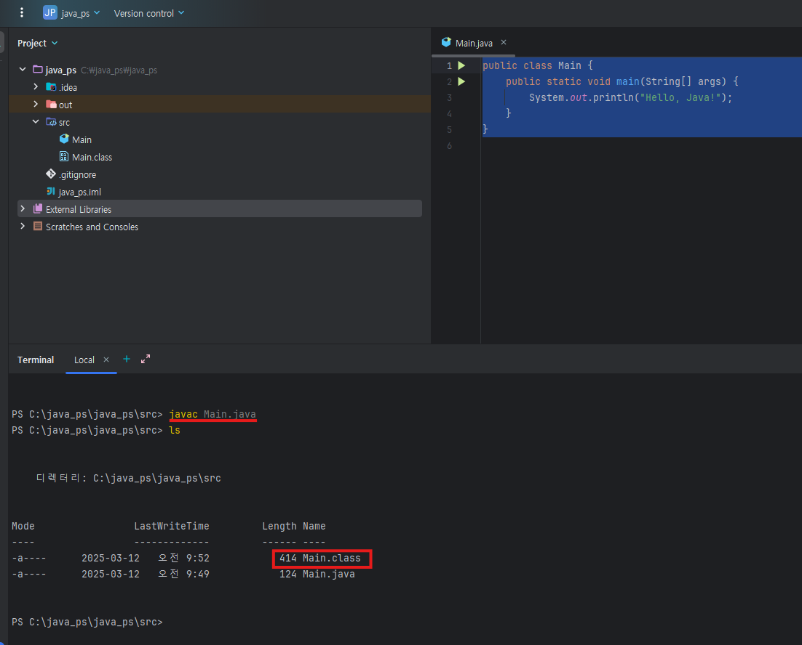
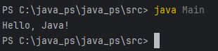

Java ByteCode
JVM이 실행할 수 있는 중간 표현입니다. OS별 기계어로 바로 가지 않고, JVM이 이해하는 바이트코드(.class)로 컴파일됩니다.
예시
1) Java 코드
public class Main {
public static void main(String[] args) {
System.out.println("Hello, Java!");
}
}2) 컴파일: javac Main.java
3) 생성된 Main.class

4) 실행: java Main

콘솔에 Hello, Java!가 출력됩니다.
Interpreter vs JIT
둘 다 JVM이 바이트코드를 실행하는 방식입니다.
Interpreter
- 바이트코드를 한 줄씩 해석하며 실행합니다.
- 초기에는 빠를 수 있으나, 같은 코드를 반복할 때마다 다시 해석해야 해 느려질 수 있습니다.
JIT Compiler
- 자주 실행되는 코드를 네이티브 코드로 변환·캐싱해 이후 실행 속도를 높입니다.
- warm-up 이후 반복 구간에서 이점이 큽니다.